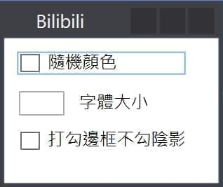

大家有在影音網站看過所謂的彈幕系統嗎？如果在 Coding 的時候收到彈幕那一定別有一番樂趣對吧？本篇文章就來使用SignalR打造桌面版的彈幕接收器，快來為你的工作增添一絲活力吧。
使用情境
這份專案大致分為三份程式，分別是接收端、Server、發送端。
訊息發送端將訊息傳給 Server，Server 再傳給所有接收端，於是彈幕出現在所有接收端畫面上。
接收端
建立接收端畫面
有時候在白底的畫面工作時，有彈幕飛過難免會看不清楚，所以特別設計了一些簡單的參數來修改文字樣式。

顯示彈幕
這部分我是參考Danmu-V2做的，對它的理解只到會動而已，稍作簡單的修改後，大致上可以如圖呼叫它，並把我們的參數傳給它。
1 | private void ShootDanmaku(string text) |
連接 Server
先安裝套件Microsoft.AspNet.SignalR.Client。
程式開啟時，建立 Server 連線，並註冊 Server 傳來的shootDanmu事件。
1 | Connection = new HubConnection("http://xx.xx.xx.xx/"); |
確定連接上後，還可以在 Server 上加入一個 SignalR 的 Group(Server 那段會提到)，方便 Server 區分 Client。
1 | Connection.Start().ContinueWith(task => |
Server 端
擴充 ChatHub
剛好以前寫過的聊天室有用到 SignalR，只要把彈幕使用者用 Group 功能區分開來就 OK 了。使用情境是這樣，當彈幕接收端開啟時，會呼叫BilibiliJoin方法，並將自己的 Id 添加進 Group。
1 | public void BilibiliJoin() |
Server 接收到訊息時，會將訊息轉傳到此 Group 中，並呼叫shootDanmu方法。
1 | public void SyncMessage(string message) { |
發送端
隨便寫支程式，反正只要能呼叫到 Server 的SyncMessage方法就成了，這裡不贅述。
Demo

結語
最近從上一份工作離職了，但有了這支程式偶爾用來洗洗對方的畫面，感覺就好像我還在同事們身邊一樣呢，聊天室還不快刷一波 6666666666。